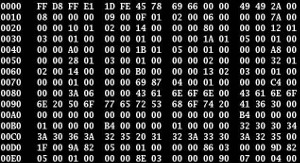
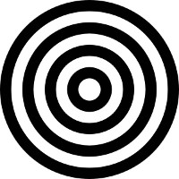
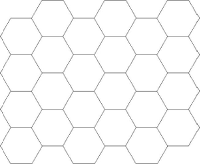

1 Racket alkeet
1.1 Peruslaskut ja laskujärjestys
1.1.1 Harjoitus 1
Harjoitellaan kirjoittamaan Racket-kielen lausekkeita.
Lataa harjoitustiedosto tästä:
|
| |
|
|


Jos käytät WeScheme:ä ja haluat tallentaa työsi, tarvitset Google-tunnukset. Kirjaudu ENSIN sisään WeScheme:en, ja tule vasta jälkeen avaamaan tehtävälinkki.
Tässä harjoituksessa tarvitset seuraavia Racket-kielen funktioita:
|
|
|
|
Tehtävätiedosto sisältää nämä laskutehtävät:
a) | \[38+45\] |
b) | \[53-28\] |
c) | \[{73} \cdot {109}\] |
d) | \[99:4\] |
a) | \[18 - 5 + 7\] |
b) | \[53 + 15 : 3\] |
c) | \[47 \cdot 8 - 16\] |
d) | \[20 : 5 \cdot 32\] |
a) | \[\frac{85-32}{12}\] |
b) | \[\frac{207}{4 \cdot 11}\] |
c) | \[(34 + 16) \cdot (60 : 3)\] |
d) | \[280 - 6 \cdot (3 + 7)\] |
1.1.2 Harjoitus 2
Harjoitellaan kirjoittamaan Racket-kielen lausekkeita kuvista.
Lataa harjoitustiedosto tästä:
|
| |
|
|
Jos käytät WeScheme:ä ja haluat tallentaa työsi, tarvitset Google-tunnukset. Kirjaudu ENSIN sisään WeScheme:en, ja tule vasta jälkeen avaamaan tehtävälinkki.
Tässä harjoituksessa tarvitset seuraavia Racket-kielen funktioita:
|
|
|
|
Tehtävätiedosto sisältää nämä tehtävät ja kuvat:
Tee Racket-lauseke, joka laskee kuinka monta mustaa neliötä kuvassa on. |
|
Tee Racket-lauseke, joka laskee kunka monta pikku neliötä rubiikinkuution sivuilla on. |
|
Tee Racket-lauseke, joka laskee kuinka monta merkkiä oheisessa koodissa on. |  |
Tee Racket-lauseke, joka laskee montako harmaata kuusikulmiota kuvassa on. |
|
Tee Racket-lauseke, joka laskee kuinka paksu musta rengas on, jos ympyrän halkaisija on 100cm. |  |
Tee Racket-lauseke, joka laskee montako kuvan näköistä elementtiä raadaan rakennettua, jos pikkulaattoja (kuusikulmiot) on käytössä 10 000. |  |
Tee Racket-lauseke, joka laskee montako kuvan näköistä taulua(50cm * 50cm) mahtuu seinälle, jonka korkeus 2,5m ja leveys 6,0m. Tee vielä Racket-lauseke joka selvittää montako ei-valkoista kolmiota seinälle tuli. |
|